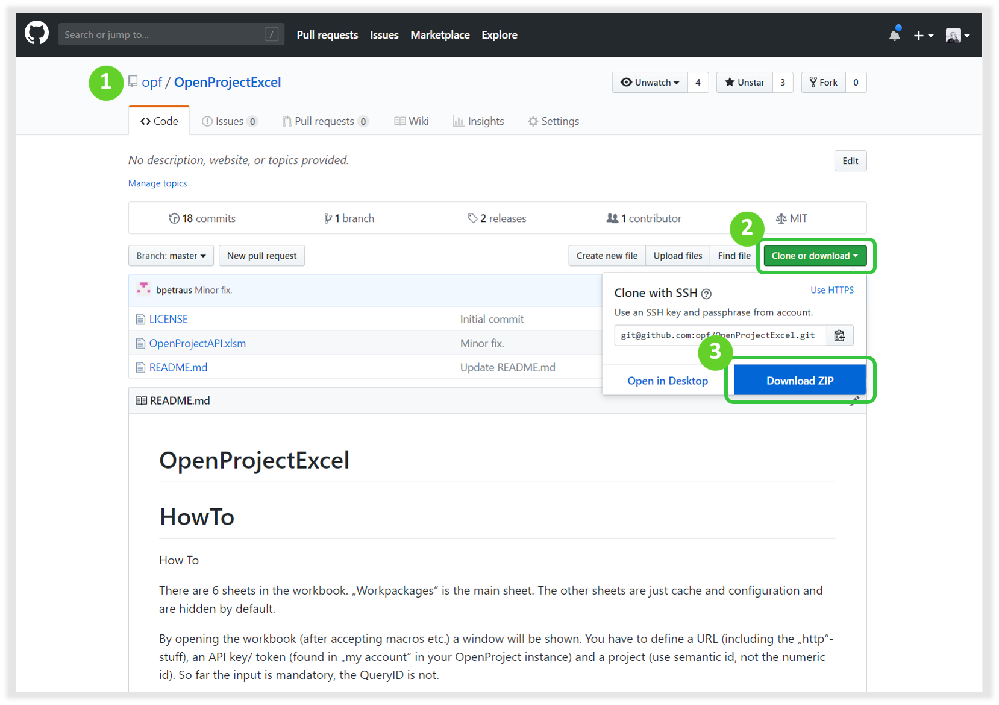
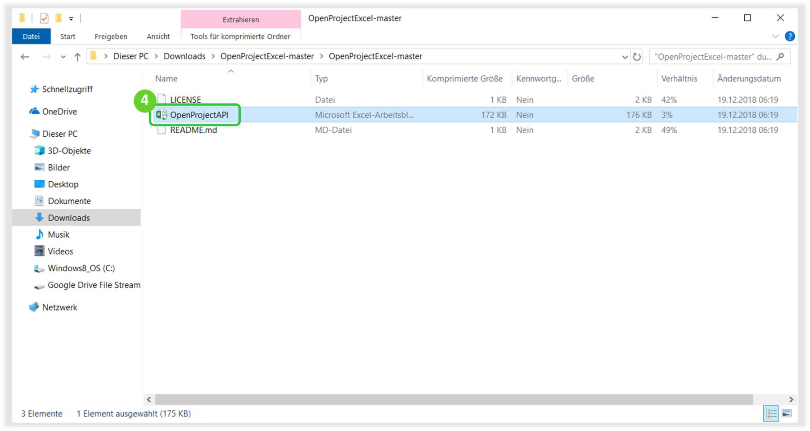
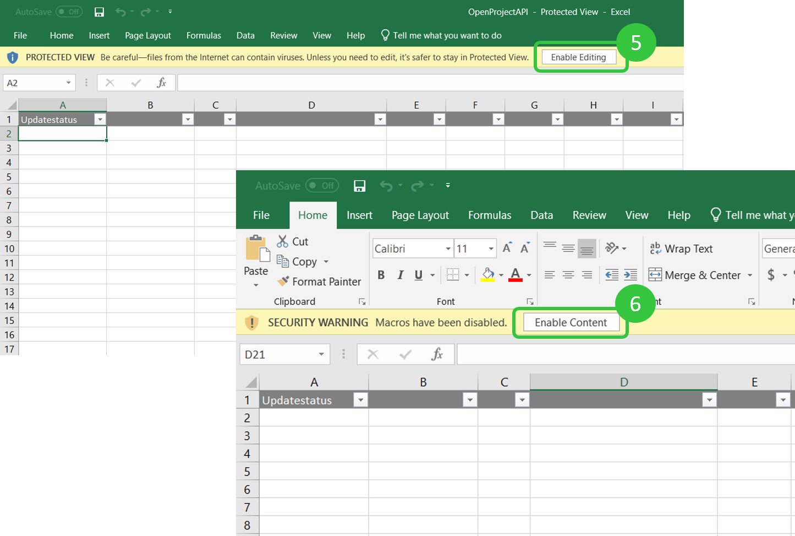
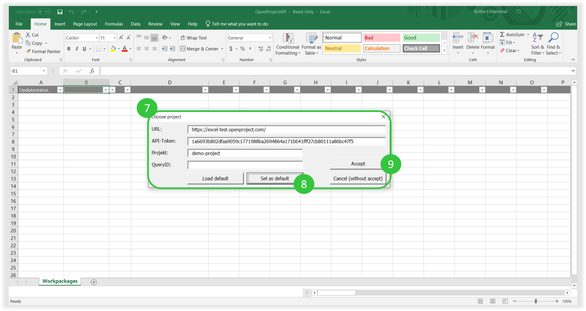
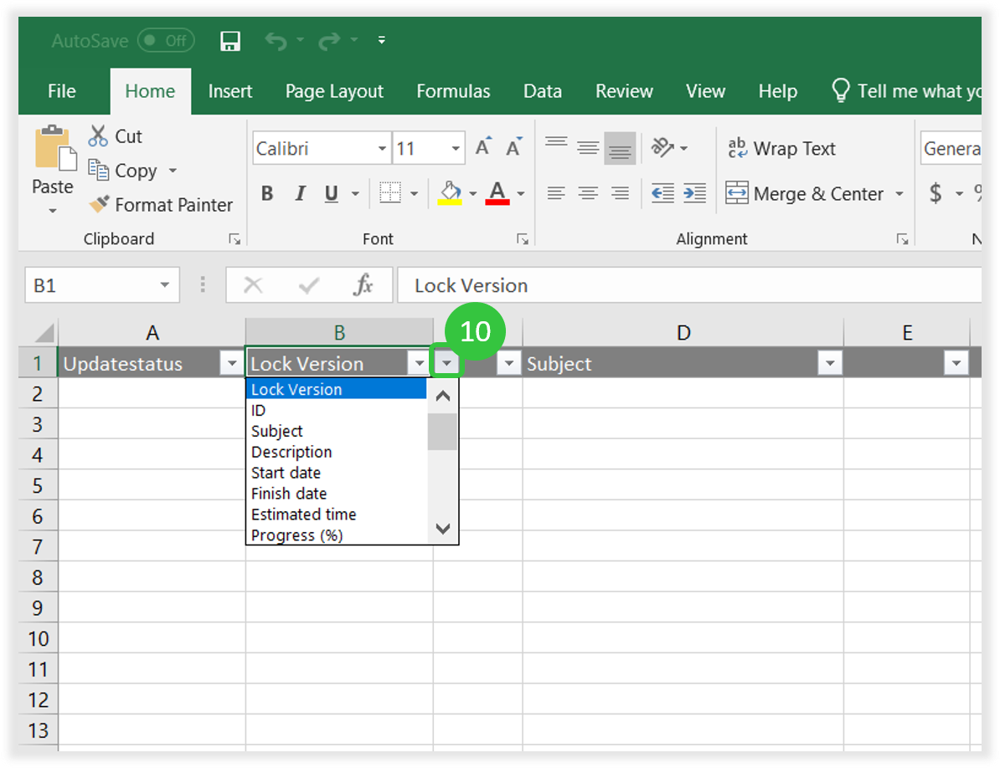
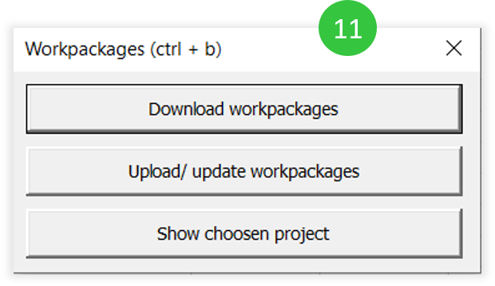
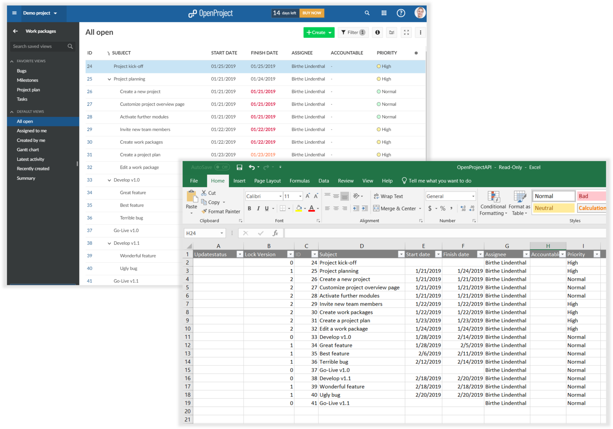
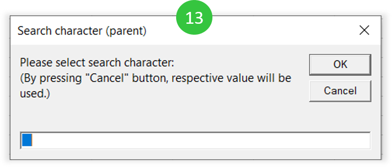
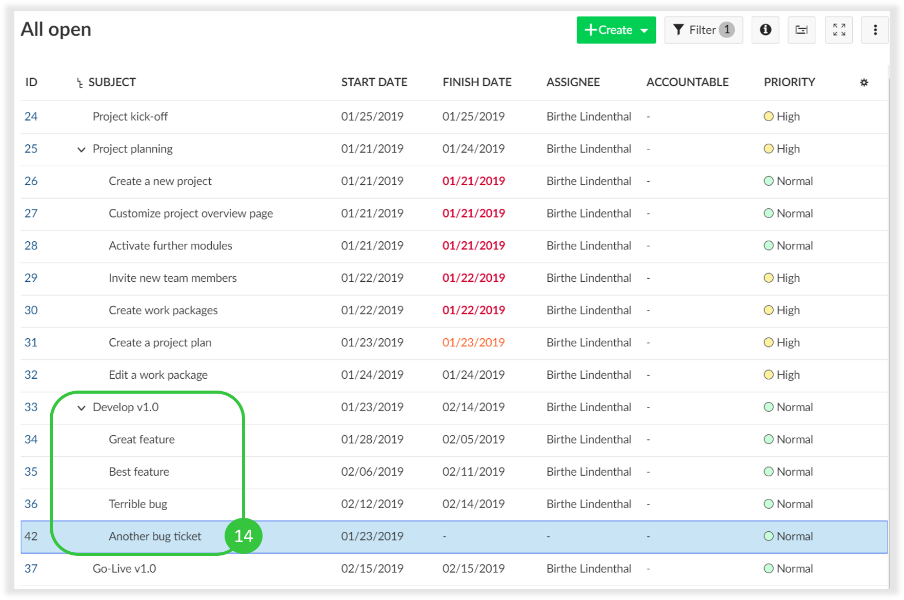

See how to set up the synchronization between OpenProject work packages and MS Excel.
See how to synchronize custom work package queries from OpenProject in MS Excel.
See how to synchronize work package hierarchies in OpenProject with MS Excel.
In order to upload your tasks from an existing Excel list to OpenProject, you need to go to OpenProjectExcel on GitHub.
Click on the green Clone or download button.
Choose the option Download ZIP.

Then, you need to extract the ZIP file and open the OpenProjectAPI Excel document.

Next, within the Excel document you are asked to Enable Editing.
Enable Content to activate macros within your document.


URL: the URL of your OpenProject instance. API-Token: can be generated within your OpenProject installation ->My Account -> Access token. Generate a new API token and copy & paste it to this form. Project: this is the project identifier which can be found within the project you want to synchronize -> Project settings -> Information. It is also shown in the URL if you open a project. Query ID (this field is optional): enter the ID of a work package query within a project with that you want to synchronize your Excel list.
Set as default: enable to remember the settings as default.
Accept to start the synchronization.
You need to select a minimum of columns to start with the synchronization. For column selection, click in the header and open the drop down which opens next to the regular drop down icon: Select the following column headers at a minimum: Updatestatus Lock Version ID Subject
Additionally, you can select as many other columns that should be synchronized – always by clicking in the header and selecting the drop down icon which appears next to the regular icon. You will have all fields available, incl. custom fields.
Important: make sure you have all fields that need to be synchronized from your Excel list also available in OpenProject. Some might be created beforehand as custom fields in OpenProject. Attributes that do not exist in the selected project within OpenProject are NOT available in the headline. They cannot be selected in the header (via the drop-down). Neither can you just create a new column with an attribute that does not exist in OpenProject. This will generate an error message.
Copy and paste all data accordingly from your existing Excel list to this sheet.


Download workpackages: intitially downloads all work packages from the selected project (and query). Upload / update work packages: makes changes to the work packages, e.g. adding new work packages or changing any information. This option needs to be chosen in order to initially import and existing Excel list. Show chosen project: Opens the settings to adapt URL, API key, project or query ID.
Congratulations! You can now synchronize your data between Excel and OpenProject.

To add or edit a new parent-child relation, you have two possibilities:
A) You can add a child to a work package when you enter 4 empty spaces (press 4x Shift) before typing the subject of the child work package.
Expert tip: it does not have to be empty spaces (default 4 empty spaces) to separate the next hierarchy. You can also take a „-“ and for the next hierarchy „—“. But the disadvantage is that the hyphen will also be displayed in the work package subject. Therefore we recommend the spaces, because they will not appear in OpenProject.
Click OK when the screen for the Search characters (screen 13) appears. The IDs in the Parent column will then be automatically updated.

Pressing Cancel will ignore the Hierarchy – no matter what has been inserted. This is relevant for option B:
B) you can edit the IDs in the parent column manually. If you have edited the IDs manually in the parent column, just click Cancel when the above Search character option (screen 13) appears. Then, the hierarchy will be updated according to the IDs in the column Parent.

Hopefully, this will save you lots of time to import all your old Excel To-Do lists and get started with OpenProject for project management.